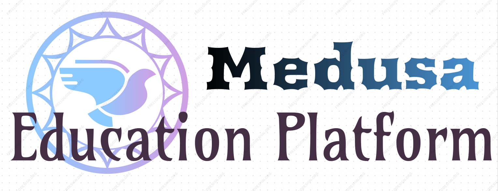
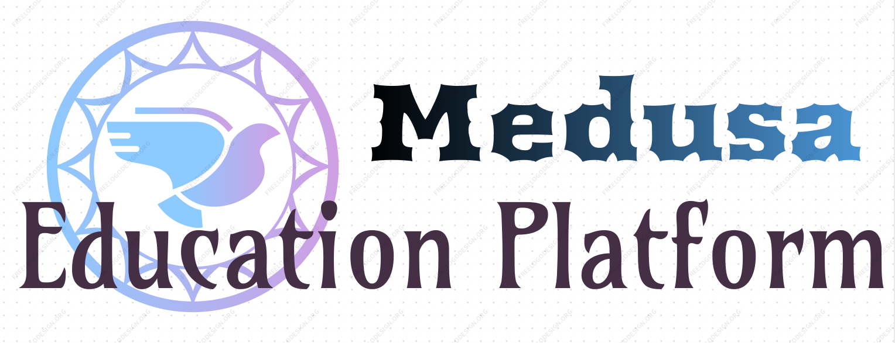

Once you've made the decision to study in the US and you know where you want to study and which program you want to undertake,
you can enroll directly with the institution. If, however, you need more help with the admission application process, you can choose to use an education platform.
An education platform can tell you about your options for studying and living in the US and assist with your visa and institution applications. In many cases,
agents have had experience studying in the US and can share their experiences with you. In addition, because they are dealing every day with application and visa application requirements they will be able to give you guidance for your particular situation.
Here are some tips for choosing a platform:
Under the US Government law, every education platform that uses the services of an education agent needs to have a contract with that organisation.
the US education platform usually have more than one education platform appointed in a country so speak to more than one agent – collect and compare information.
Under the US Government law, every the US education institution has to list on their website every education platform it has appointed to represent them in each country.
Choose an education platform with experience helping students study in the US – they will have a good knowledge of the the USn education system, visas and life in the US.
Make sure that the agent is an authorized representative of the institution that you want to apply to. You can ask to see their letter of apointment from the institutions if you want.
Ask about any fees that may be levied for using their services.
Have a third party or friend help you understand the documents before you sign any documents.
Remember, Medusa education platform cannot guarantee a permanent visa or work placement in the US after you graduate. Their job is to help with applications, so if it sounds too good to be true, keep looking. A reputable agent will be honest about the application process.
 
